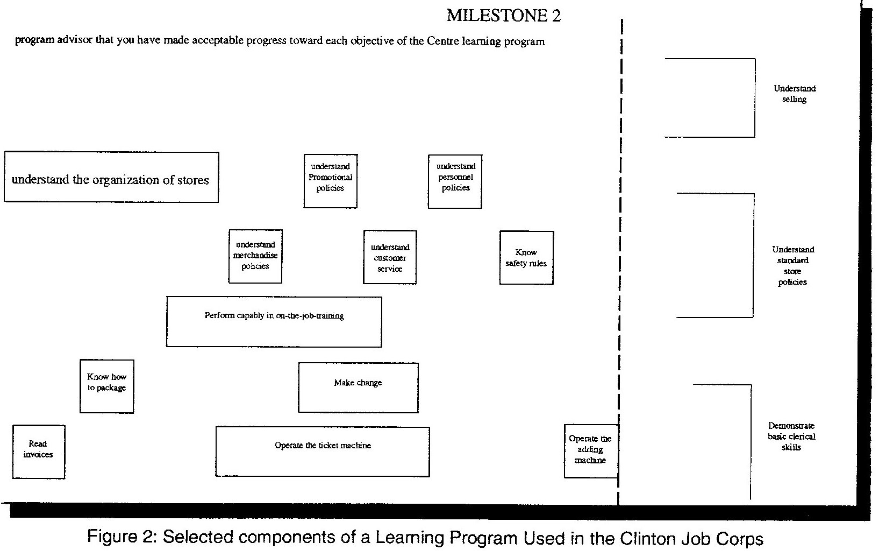
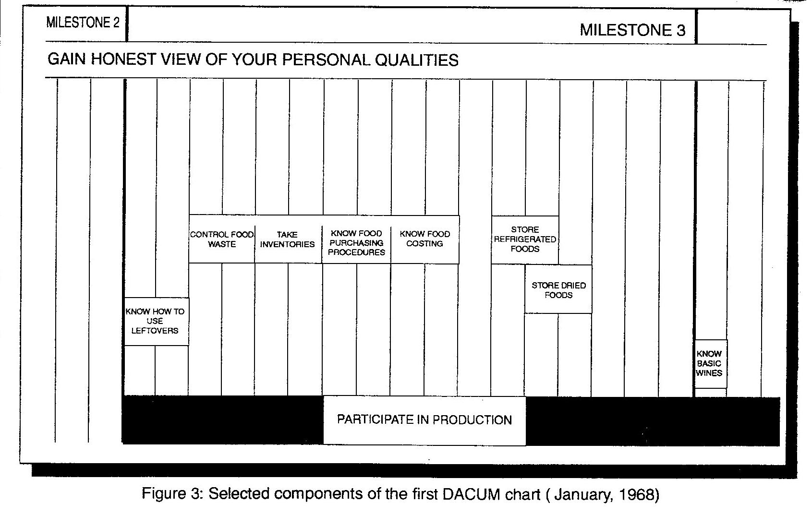

EXPERIMENTAL PROJECTS BRANCH
The opening chapter recorded some of the events surrounding the rapid expansion of technical and vocational training in Canada during the 1960’s. a period during which the writer had an inside view as a member of the Training Branch, Department of Labour, Ottawa. From that vantage point, the writer remembers frequent discussions about the need for research into manpower training. both within the Branch and between Training Branch officials and Directors of Vocational Education among the provinces. While not directly involved, the writer was aware of the rising attention being assigned to the subject as evidenced by some staff being seconded or contracted to further develop the idea.
Within the federal government generally, partly because of a change of government, officials soon became aware of increased concern about the high levels of unemployment and the inadequate readiness of so many Canadians to enter the employment mainstream. Increased investment was called for in programs and services designed to increase both education and educational opportunity for unemployed and under educated youth many of whom were in rural areas. In July, 1965, the Government of Canada convened a Federal-Provincial Conference at which time Prime Minister Pearson proposed to designate some areas of the country for “an intensive effort in practical research designed to determine the best methods of meeting the training needs of adults in designated areas.” The proposal received general approval and federal and provincial officials began to shape the initiative.
Also during the late 1960’s, the Technical and Vocational Training Assistance Act came to an end and, consistent with the thinking of the government generally, the focus changed quite dramatically as to an appropriate federal-provincial delivery arrangement for manpower training. Under the Technical and Vocational Training Assistance Act, the Federal cost shared a number of training programs and the style of operation was collegial; under its successor, the Adult Occupational Education, the Federal government purchased seats in courses for its clients and paid the full cost. This arrangement allowed the federal government to control its expenditures but also allowed it to control the nature and length of each individual’s training course - a level of control not included available in the TVTA Act.
By mid-1966, an Experimental Projects Branch, including a Technical Support Centre, was set up within the Department of Manpower and Immigration and a decision was taken to operate a number of experimental research projects under the name Canada NewStart Program. The following year, 1967, the Experimental Projects Branch appears to have undergone a name change and was called the Pilot Projects Branch.
-------- 1952-------------- 1956-------------- 1966-------------- 1967----------------------------------------- 1968----------------------------------------- 1969----------------------- 1970---------------------------------------- 1971---------------- 1972----
FEDERAL Prepares Develops
GOV'T Occupational Functional
Analyses Analyses
-----------------------------------------------------------------------------------------------------------------------------------------------------------------------------------------------------------------------------------------------------
Officials Develops Adopts
HOLLAND Visit First DACUM
COLLEGE Noa Scotia DACUM Model
ESTABLISHED NewStart Chart
-------------------------------------------------------------------------------------------
NEWSTART Adams to Adams develops
CORPORATIONS Nova Scotia and implements
ESTABLISHED NewStart DACUM
Charts Model
--------------------------------------------------------------------------------------------------------------------------------------------------------------------------------------------------------------------------------------
PILOT Officials Clement to Clement First DACUM
PROJECTS Visit Pilot to Clinton, Chart Clement to
BRANCH Clinton Projects Iowa Developed Zambia
Branch
NewStart,
Ottawa
--------------------------------------------------------------------------------------------------------------------------------------------------------------------------------------------------------------------------------------
BC DEPARTMENT Establishes Documents DACUM Cooking Develops Learning
OF EDUCATION Curriculum process under contract DACUM Chart Activities Batteries
Division to NewStart Used at for Cooking Chart
Nanaimo
----------------------------------------------------------------------------------------------------------------------------------------------------------------------------------------------------------------------------------------------------------------------------------------------------------------------------------------------------------
Figure 1: Sequence of Events in Early Years of DACUM
NewStart Corporations
The Canada NewStart Program was established for the purpose of undertaking action-research and experimentation in motivating and training rural, unemployed, underemployed and disadvantaged young adults was to address both training and motivation. Programs would be delivered through a provincially incorporated NewStart Corporation but would be funded by the Government of Canada. NewStart Corporations would be located in areas designated for development, under the Area Development Act, most likely under pressure because of industrial decline or expansion or the migration transfer of people from farm to city. Each NewStart Corporation, however, would have considerable freedom to determine its own focus and direction.
Under the terms of Reference dated September, 1967, NewStart Corporations were expected to: (Pilot Projects September 1967) to:
Assess the training needs of people in the area
Determine the training required to develop occupational competence
Develop prevocational training in mathematics, science and communication skills
Prepare occupational training and retraining materials
Develop methods of vocational counselling and orientation
Develop methods of motivating people to enrol for and persist in training
Promote expanded training programs in industry
Although all NewStart programs were different, all contained a number of common elements: basic education, basic life skills, occupational training, individual and family counselling, and community development. In fact, in responding to the needs of its designated, each NewStart Corporation took on its own unique activities and operating style. For example:
The Saskatchewan NewStart Corporation, established in 1967 focused its activities on social development and basic education with an emphasis on Life Skills, Basic Education, Soconics (a cluster of skills and competencies used in a variety of social agencies), generic skills and entrepreneurship.
Nova Scotia NewStart Corporation, established in 1967, experimented with methods and programs that could be implemented on a widespread basis to prepare unemployed and underemployed adults for stable and rewarding employment." Their activities included the actual operation of a fishing trawler to train fishermen. The role of the Nova Scotia NewStart corporation in the development of DACUM is the subject of a later subject
PEI NewStart Corporation, established in 1967, developed a prototype manpower development program in support of the Comprehensive Development Plan being introduced to the Province.
Alberta NewStart Corporation, also established in 1967, operated mobile “bush” schools and is thought to have laid the groundwork for training local people for the Alberta Tar Sands development.
Manitoba NewStart corporation focused on disadvantaged groups in remote areas of the Province mainly the Pas, preparing native peoples to participate in economic development activities planned for northern Manitoba
New Brunswick NewStart Corporation focused on the development and testing of adult educational materials for the Acadian population of Kent county
Because the focus of this book is only on the development of the DACUM model, the next pages deal only with activities of the Technical Support Centre that are relevant to that outcome.
AN INTERESTING DISCOVERY Clinton Job Corps
As part of the search for knew ideas, officials of the Technical Support Centre visited a Job Corps Program at Clinton, Iowa, that operated a residential training centre with an enrolment of 900 young women between the ages 16 to 21. The objective of the program was "to serve each enrolee in two ways: to meet her immediate physical and emotional needs and to guide her into a rewarding role as breadwinner, homemaker, and citizen." 1
The Clinton Job Corps program was contracted to the General Learning Corporation, a Division of Time-Life of New York which was one of a number of private sector corporations which were established to serve the education market. The major interest of the General Learning Corporation appeared to be the publishing of curriculum materials. The program there was directed by Dr. Rice whose approach caught the eye of the Canadian visitors.
A report on the Clinton Centre described their learner centred curriculum as follows:
"During a period of orientation, each enrolee is aided by test batteries and staff interviews in assessing her abilities and her accomplishments and in choosing a vocation. She is then introduced to her program advisor, with whom she selects an initial program of learning experiences. Her program may include appropriate attention from the medical and counselling staff. Thereafter, she meets at frequent scheduled intervals with her advisor to evaluate her progress and redesign her program. The process is, in effect, a series of contracts between the enrollee and the Centre, which continues until she and her advisor agree that she is ready to graduate."
"To provide a range of learning experiences adequate to the individual needs of some nine hundred young women of widely various backgrounds, abilities and accomplishments, the staff has developed the curriculum which is represented by the charts ..."
Under the Clinton approach, a student and a learner sat together and sketched out a learning plan on a sheet of paper. Each plan included only a few learning activities. The process was intended primarily as a means of improving motivation through engaging students in planning the steps to be taken in the learning process. Selected components of one chart are included as Figure 2.

The charts used at Clinton had learning tracks (horizontal bands) with each block or course being placed at a location which indicated the point at which training might commence. The length of the block indicated the comparative amount of time that a learner might spend on the study of that module. Charts also included milestones where "awards", presumably certificates, would be presented to recognize achievement.
One of the officials in the Technical support Centre was Howard Clement who had come to Ottawa from the Curriculum Branch of the British Columbia Department of Education. Whether or not clement visited Clinton is not know, however, as a seasoned curriculum developer he immediately saw value in the work at Clinton
THE FIRST CHART
Given Clement's experience with curriculum development, it was natural that he immediately recognized in the Clinton experience some components which had applicability to curriculum development for the NewStart Corporations. Clement proceeded, therefore, to contract Rice to provide technical advice on curriculum development to the emerging NewStart corporations.
In early 1968 (January 22 - 24, 1968), Clement convened a meeting in Ottawa of Rice, Franklin and Chef Instructors to prepare a visual curriculum chart for the field of cooking. The curriculum chart was prepared by instructors, included both skill and knowledge modules, arranged visually on a single sheet of paper with the length of the block indicating the relative importance of the module. Each band was in effect, a series of short courses arranged in a recommended learning sequence.
Franklin remembers a meeting held in his office in early 1968, after the chart was completed in Ottawa. The meeting, I believe, was convened by Clement with Dr. Rice and program officers from various NewStart corporations
This meeting was called to:2
a. "review the progress we were making on the chart,
b. to talk about the writing of a new contract with the B.C. Ministry to

enable us to participate in further development, and
c. to talk about how we should proceed when developing the curriculum materials required to support the as yet un-named curriculum process."
Not surprisingly, events surrounding the actual conception and birth of the acronym, DACUM, are not clear. Whereas, individuals close to the project remember discussions in which they were involved, they may not have been aware of other discussions during which they were not present. Unfortunately, the writer does not have a clear and definitive statement from Clement who would have been a party to such deliberations.
Adams recalls the discussion and that many ideas were put forth in brainstorming sessions but no single title or acronym had full agreement. Designing a Curriculum and Developing a Curriculum appeared to have the most support. Following the meeting, likely when preparing the minutes, Clement settled on Designing A CUrriculuM and DACUM was born; Adams' notes of the meeting show "Developing A CUrriculuM" and hence the origin of "Developing" versus "Designing".
DOCUMENTATION
Late in 1968, the Technical Support Centre contracted with the B.C. Department of Education and the General Learning Corporation to document and describe the curriculum development process.3 Documentation was coordinated by Clement with the design and script prepared by Rice. The design and production of the booklet was under the direction of Derek N. Franklin, Director of the B.C. Division of Vocational and Technical Curriculum. Senior consultants to the project were drawn from food services and culinary training programs. Three other people participated; they may have been officials of EIC or, as Franklin recalls, they may have been Chef Instructors from the Ottawa-Hull area.
The remainder of this chapter is based on an examination of the booklet and the actual chart. Clement based the report on the earlier analysis of cooking and this occupation is used extensively to illustrate the DACUM concept.
Clement did not provide a definition of DACUM however. The following excerpt from the foreword sets the stage for the group's efforts.
"The Dacum Method of Curriculum Design described in this presentation illustrates one method by which Master Instructors can design courses in excitingly new and different patterns. Participants too may chart their own progress and their terminal objectives will always be visible to them. ... The basic premise of this concept is to encourage the training of adults through individualized programs." (6)
From an examination of the chart and Clement's later descriptions, a portion of which is shown in Figure 3, we can conclude that:
• A brainstorming technique was used with either Clement or Rice as the resource person;
• The group was composed of instructors and curriculum specialists;
• The chart included both knowledge and performance modules;
• The chart is more of a curriculum then an occupational analysis;
• The size of individual blocks reflects the importance of the block;
• The location of each block reflects the recommended teaching sequence.
Figure 3: Selected components of the First DACUM Chart (January, 1968)
The report makes reference to learning objectives and learning activities with the latter being grouped into "logical and convenient learning units".
The report deals with curriculum development in the following six distinct steps:
1. Describe Terminal Behaviour
This is undertaken with the assistance of students, teachers, and with people drawn from the occupation. It appears that a chart is constructed with an individual student in mind, however, it is likely that a course or program for other students would include most, if not all, of the same learning units. Since this is a learning chart, the designers saw the likelihood that the chart could be extended if a student wanted to continue into more advanced levels of training in his chosen occupation.
2. Prepare Terminal Measurements
This step is also carried out with student participation. In describing the measurement of terminal behaviour, Rice recognizes the need for testing of performance rather than only verbal skills.
3. Describe Learning Unit Behaviour
Learning units collectively lead towards fulfilment of a learning objective. Students, teachers, and "established authorities" continue to be involved.
4. Prepare Learning Unit Measurements
Learning Unit Measurements are not well described in the report but they are "especially designed to make it possible for the entering student to identify any entering proficiencies which he has attained..."
5. Prepare Learning Activity Batteries
Learning Activity Batteries are a collection of learning resources, both commercial and custom made, which are provided to a learner.
Figure 4: Selected Components of Analysis of Cooking Program (1969)
6. Prepare Individual Student Programs
Students are encouraged to proceed at their own pace and in an order which best suits their individual career or occupational objectives.
In the time which elapsed between the analysis and the completing of the report, it is obvious that the groups thinking evolved. A section of the Cooking Chart which appeared in Designing A Curriculum (1969) is shown as Figure 4. While the general characteristics of the two charts (that chart resulting from the Ottawa session and that appearing in the report) remain the same, each track or band has a separate colour and milestones were no longer included on the revised chart.
A SWITCH TO COMPETENCIES/An alternative DACUM
A meeting of senior officials from the various NewStart Corporations was held at the Lobster Shanty North in Montague, PEI on July 17 - 19, 1968. It was chaired by Clement, with Rice as major resource person. It was called to review the status of the first chart and progress on the documentation of the process. As well as curriculum development activities at various NewStart Corporations. At this meeting, Adams presented a number of analyses that he had prepared using the single page format but, as the next chapter will show, Adams charts were quite different from those being produced by Rice and Clement.
But this will be picked up in a later section
These included commercial deckhand, housekeeping/homemaking, and oil burner repair. By that time also, Adams had not only developed the analyses but was using them in his training programs.
. (Sloan speech p.2) It would appear that the initiatives, although having the same objectives and intended for the same clientele, proceeded in parallel.
At the same time, a Department of Regional Economic Expansion was in the making and the NewStart initiative was eventually placed there within a newly created Social and Human Analysis Branch
1 Clinton Job Corps Center, Learning Program, Clinton Job Corps Center, Clinton, Iowa, 1968.
2 Letter from Franklin 1994 12 08
3 Canada, Department of Regional Economic Expansion, DACUM: Designing A Curriculum, Ottawa: The Department, 1969.